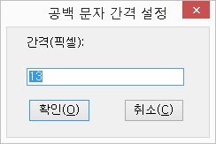
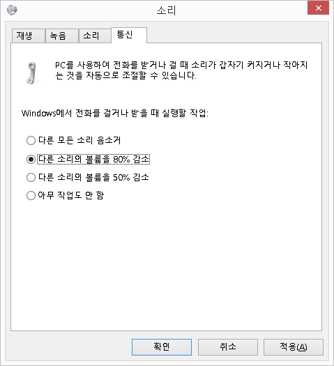

부록3 문제해결
- 부록3-1. 공백 문자 간격 설정(XP/비스타/윈도7)
- 부록3-2. 데이터 실행방지 오류 발생시 조치법
- 부록3-3. 'DRWTSN32.EXE' 에러 대처법
- 부록3-4. 구성 요소 오류
- 부록3-5. 한글 2005, 2007 설정
- 부록3-6. 센스리더 디스플레이 설정 방법(보조 디스플레이)
- 부록3-7. 센스리더 기본 디스플레이 설정 방법(XP)
- 부록3-8. 어도비 리더 설정
- 부록3-9. 익스플로러 11 설정
- 부록3-10. 익스플로러 9, 10, 11에서 알림 메시지 사운드 출력 설정
- 부록3-11. 로그인이 불가능한 조치법
- 부록3-12. 센스리더가 삭제되지 않는 경우 조치법
- 부록3-13. SKYPE 통화 중 센스리더 음성 감소 조치법
- 부록3-14. 센스 독서기 초기화 방법
- 부록3-15. 인텔 그래픽카드 바로가기 키 사용해제 방법
부록3-1. 공백 문자 간격 설정(XP/비스타/윈도7)
센스리더의 읽기 포인터 기능 이용시 적용될 공백 문자(스페이스)의 폭을 지정해 줍니다.
센스리더는 초기 설치시 1024 * 768 해상도를 기준으로 공백 문자 간격이 13 픽셀로 지정되어 있습니다. 만약, 사용자의 모니터가 기준 해상도보다 높은 환경이거나 특정 프로그램에서 읽기 포인터 기능 활용시 띄워쓰기를 정상적으로 구분하지 못하고 글자들을 붙여서 읽는 현상이 나타난다면 아래 방법에 따라 공백 문자 간격을 조절해 줍니다.
공백 문자 간격 설정
① <Ctrl+\> 키를 눌러 센스리더 메인창을 활성화 합니다.
② [일반] -> [기본 환경 열기] 메뉴를 실행합니다.
③ [환경 설정] 메뉴의 [공백 문자 간격 설정] 항목을 선택하여 '공백 문자 간격 설정' 대화상자를 호출합니다.

④ 설정 대화상자가 나타나면 편집창에 현재 설정값보다 1이 적은 값을 입력하고 '확인' 버튼을 누릅니다. 예를 들어, 현재 13이 지정되어 있었다면 12를 입력합니다.
⑤ [일반] 메뉴의 [환경 저장] 메뉴를 선택하여 환경을 저장합니다. 기본 환경을 저장할 것인가를 묻는 대화상자가 출력되면 '예' 버튼을 누릅니다.
⑥ <Esc> 키를 눌러 센스리더의 메인창을 닫습니다.
⑦ 위의 설정을 적용한 후에도 동일한 현상이 발생한다면, 입력값을 1씩 줄여가며 사용자 컴퓨터에서 최적의 환경을 찾아 설정하도록 합니다.
참고사항
한글 워드의 경우 공백 문자 간격을 4로 지정합니다.(1024*768 해상도 기준)
부록3-2. 데이터 실행방지 오류 발생시 조치법
인터넷 익스플로러나 윈도우 탐색기 사용시 '데이터 실행방지 오류'가 생기는 경우 다음과 같이 조치합니다. 데이터 실행방지 오류는 XP 서비스팩2 이상의
운영체제에서 발생할 수 있습니다.
1. XP sp2, sp3인 경우
① 내 컴퓨터에서 <PopUp> 키를 눌러 [속성]을 연 뒤, '고급' 페이지탭으로 이동합니다.
② <Tab> 키를 눌러 '시스템 시작, 시스템 오류 및 디버깅 정보' 항목의 '설정(T)' 버튼을 누릅니다.
③ '시작 및 복구' 대화상자가 열리면 <Tab> 키로 이동하여 '편집(E)' 버튼을 찾아 <Space> 키로 누릅니다.
④ '편집' 버튼을 누르면 'boot.ini' 파일이 메모장으로 열리게 됩니다.
문자열 찾기기능(Ctrl+F)를 이용하여 '/noexecute=' 문자열을 찾습니다.
⑤ '/noexecute=optin' 라고 되어 있는 부분을 '/noexecute=alwaysoff' 로 변경합니다.

⑥ 메모장에서 수정된 내용을 저장<Ctrl+S>한 뒤, 메모장을 종료하고, '확인' 버튼을 계속 눌러 열려진 창을 모두 닫습니다.
⑦ 윈도우즈를 다시 시작합니다. 만약, 변경된 옵션을 이전 상태로 되돌리고 싶다면 win.ini 파일에서 수정했던 부분을 원상태로 변경하고 컴퓨터를 재부팅합니다.
{{2. 비스타/윈도7인 경우}}
① 시작 메뉴를 활성화하고 보조프로그램의 '명령 프롬프트'를 관리자 권한으로 실행합니다.
-비스타인 경우, '시작 메뉴 -> 프로그램 -> 보조프로그램 -> 명령 프롬프트' 항목으로 이동한 다음 팝업 메뉴를 열고 [관리자 권한으로 실행] 메뉴를 실행합니다.
-윈도7은 '시작 메뉴 -> 모든 프로그램 -> 보조프로그램 -> 명령 프롬프트'로 이동한 다음 팝업 메뉴를 열고 [관리자 권한으로 실행] 메뉴를 실행합니다.
② 명령 프롬프트 창이 열리면 아래와 같이 명령어를 입력한 다음 <Enter> 키를 누릅니다.
'Bcdedit.exe /set {current} nx AlwaysOff'
③ 옵션이 정상적으로 변경되었다면 '작업을 완료했습니다.'라는 메시지가 출력됩니다.
④ 'exit' 명령어를 입력하여 명령 프롬프트 창을 닫고 윈도우즈를 재시작합니다.
⑤ 만약, 이전 상태로 옵션을 변경하고 싶다면 명령어의 마지막 단어(alwaysoff)를 'optin'으로 변경하여 명령어를 다시 실행하면 됩니다.
부록3-3. 'DRWTSN32.EXE' 에러 대처법
센스리더 사용시 'drwtsn32.exe' 에러가 발생되는 경우 다음과 같이 조치합니다.
① 시작 메뉴의 [실행(R)] 메뉴를 실행합니다.
② 실행 대화상자가 열리면 편집창에 'drwtsn32' 라고 입력한 뒤, '확인' 버튼을 누릅니다.
③ 'Windows용 Dr.Watson' 대화상자가 열리면 '크래시 덤프 파일 만들기' 체크상자를 찾아 <Space> 키로 선택을 해제해
줍니다.
④ '확인' 버튼을 눌러 설정을 저장합니다.
부록3-4. 구성 요소 오류
센스리더 프로페셔널 에디션은 프로그램 기능 향상을 위해 마이크로소프트의 C++ 2005 개발환경을 사용합니다. 이 경우 해당 프로그램이 정상적으로 실행되기 위해서는 관련 라이브러리가 컴퓨터에 설치되어 있어야 합니다. 센스리더는 프로그램 설치시 프로그램의 정상 실행을 위해 라이브러리를 함께 설치하게 됩니다.
그러나 다양한 원인으로 인해 C++ 2005 라이브러리가 정상적으로 설치되지 않은 경우, '구성 요소를 찾을 수 없습니다'라는 오류 메시지가 출력되며, 센스리더는 정상 실행되지 못합니다. 이런 경우, 다음의 방법에 따라 2005 관련 라이브러리를 설치하도록 합니다.
① 센스리더 설치 CD 내의 'vcredist' 폴더를 찾아 진입합니다.(윈도7 64인 경우 'vcredist64' 폴더)
② 폴더 내의 파일 중 'vcredist_x86.exe' 파일을 찾아 실행합니다.(윈도7 64인 경우 vcredist.msi 파일을
실행함.)
③ 2005 라이브러리가 정상적으로 설치되었다면 제어판의 프로그램 추가/제거에 'Microsoft Visual C++ 2005 Redistributable'라는 항목이 추가됩니다.
④ 센스리더를 다시 실행합니다.
부록3-5. 한글 2005, 2007 설정
센스리더에서 한글 2005/2007을 정상적으로 사용하려면 HNCAA라는 접근성 지원 모듈이 컴퓨터에 등록되어 있어야 하고, 타이핑시 정확한 음성출력을 위해 한글 입력기를 윈도우 입력기로 변경해 주어야 합니다.
1. HNCAA 접근성 지원 모듈 등록 방법
한글 실행 이후 <Ctrl+Shift-F9> 키를 눌렀을 때 '한글 설정' 대화상자가 나타나지 않고 '한자 색인' 대화상자가 나타난다면 HNCAA를 아래 과정에 따라 컴퓨터에 등록해 주도록 합니다.
1) 한글 2005
시작 버튼 -> [실행(r)] 메뉴를 차레대로 실행하여 실행창을 연 다음 아래 명령어를 입력하고 '확인' 버튼을 누릅니다.
regsvr32 "c:\hnc\hwp65\HncAccessible.dll"
2) 한글 2007
시작 버튼 -> [실행(r)] 메뉴를 차레대로 실행하여 실행창을 연 다음 아래 명령어를 입력하고 '확인' 버튼을 누릅니다.
regsvr32 "c:\Program Files\Common Files\Hnc\Common\HncAccessible.dll"
위의 명령어는 한글이 종료된 상태에서 실행하도록 하며, HNCAA 모듈이 정상적으로 컴퓨터에 등록되었다면 등록 성공이라는 메시지가 출력됩니다.
* 한글 2005/2007이 기본 경로 외에 다른 경로에 설치되어 있다면 명령어를 해당 경로에 맞게 변경하여 실행하도록 합니다.
* 윈도 비스타와 윈도7에서 한글 접근성 모듈이 정상적으로 실행되지 않는다면 위의 명령어를 관리자 권한으로 실행해 줍니다.
2. 입력기 환경 설정
한글은 자체적인 입력기를 사용함으로 센스리더와 같은 화면읽기 프로그램이 타이핑하는 상황을 체크하는 데 어려움이 많습니다. 이런 경우 한글의 입력기를 윈도우즈 표준 입력기로 변경하도록 합니다.
① 한글을 실행한 이후 <Alt-F2> 키를 눌러 입력기 환경 설정 대화상자를 엽니다.
② <Tab> 키를 눌러 '제 1 글자판' 콤보상자까지 이동한 다음 아래 화살표키를 눌러 제 1 글자판을 '윈도우즈 입력기'로 변경하고
<Enter>를 누릅니다.
③ 2번과 같은 방법으로 제 2 글자판도 '윈도우즈 입력기'로 변경합니다.
④ '설정' 버튼을 눌러 변경된 환경을 적용합니다.
⑤ 한글을 한 번 종료한 다음 다시 실행합니다.
부록3-6. 센스리더 디스플레이 설정 방법(보조 디스플레이)
1. 디스플레이 관련 설정
센스리더 설치 이후, 이야기멀티의 넓은마을 접속 화면이나 스카이프의 메뉴, 대화상자 내용 등을 정상적으로 읽지 못한다면 먼저, 다음의 2가지 설정을 확인해 주십시요.
① 센스리더 비디오 디바이스 모드 선택 여부 : 센스리더 창을 활성화한 다음 [일반] 메뉴의 [비디오 디바이스 모드]를 선택합니다.
② 시각효과 설정 : '내 컴퓨터' 아이콘의 속성을 활성화한 다음 고급 페이지탭의 '설정(S)' 버튼을 누르고 시각효과 설정창이 나타나면 '최적 성능으로 조정' 옵션을 선택합니다.(비스타와 윈도7의 경우 '컴퓨터 속성을 연 다음 '고급 시스템 설정' 항목을 실행하고, 창이 열리면 고급 페이지탭으로 이동하여
'설정(S)' 버튼을 실행함.)
2. 보조 디스플레이 재설정 방법
위의 두 가지 설정을 확인하였음에도 같은 증상이 계속 나타난다면 센스리더의 '보조 디스플레이 설정'을 아래 방법에 따라 재설정합니다.
① 장치관리자를 실행한 다음 디스플레이 어댑터 항목을 활성화하고 'Xvision Technology display driver' 항목을
<Del> 키를 눌러 삭제합니다. 만약, 해당 항목이 존재하지 않는다면 이후 단계로 바로 진행합니다. 드라이버 삭제 이후 컴퓨터가 재부팅될 수 있습니다.
② 센스리더 창을 활성화하고 [도구] 메뉴의 [디스플레이 설정] 메뉴를 실행합니다.
③ '보조 디스플레이' 체크상자를 선택하고 '확인' 버튼을 누릅니다. 이어서 디스플레이 변경 확인창이 나타나면 '예' 버튼을 누릅니다. 잠시 후 컴퓨터가 재부팅됩니다.
참고: 비스타와 윈도7은 '기본 디스플레이'를 지원하지 않습니다.
3. 보조 디스플레이 수동 설치 방법
센스리더의 디스플레이 설정 메뉴를 통해 '보조 디스플레이'가 정상적으로 설치되지 않는다면 다음과 같은 수동 방법으로 드라이버 재설치를 시도할 수 있습니다.
① 위 방법에 따라 'Xvision Technology display driver'를 제거한 다음 컴퓨터를 재부팅합니다.
② 장치관리자를 실행한 다음 <Tab> 키를 한 번 눌러 트리뷰 컨트롤로 이동합니다. 이후, 팝업 메뉴를 열고 [레거시 하드웨어 추가] 메뉴를 실행합니다.
③ 새 하드웨어 추가 대화상자가 나타나면 '다음' 버튼을 누릅니다.
④ '자동으로 하드웨어를 검색하고 설치' 라디오 버튼이 나타나면 아래 화살표 키를 한 번 눌러 '목록에서 직접 선택한 하드웨어 설치'로 옵션을 변경한 후
'다음' 버튼을 누릅니다.
⑤ 하드웨어 종류 목록상자가 나타나면 아래 화살표 키를 눌러 '디스플레이 어뎁터'를 선택하고 '다음' 버튼을 누릅니다.
⑥ 드라이버 목록이 표시되면 '디스크 있음' 버튼을 누릅니다.
⑦ 경고 메시지와 함께 디스크에서 설치 대화상자가 열리면 '찾아보기' 버튼을 누릅니다.
⑧ 파일 찾기 대화상자가 열리면 센스리더의 설치 폴더로 이동합니다. 기본 경로는 'c:\program files\xvision\sense reader' 입니다.
⑨ 파일 목록에서 'xvvid.inf' 파일을 찾아 <Enter> 키를 누릅니다.
⑩ 다시 '디스크에서 설치' 대화상자로 포커스가 돌아오면 '확인' 버튼을 누릅니다.
⑪ 포커스는 '새 하드웨어 설치' 대화상자로 돌아옵니다. <Tab> 키를 눌러 드라이버 목록으로 이동한 다음 'XVision technology display driver' 항목을 선택하고
'다음' 버튼을 누릅니다.
⑫ 설치 안내 대화상자가 다시 열리면 '다음' 버튼을 누릅니다.
⑬ 만약, 보안 대화상자가 열리면 '이 드라이버 소프트웨어를 설치합니다' 버튼을 누릅니다.
⑭ 잠시 후 드라이버 설치가 끝났다는 대화상자가 열리면 '마침' 버튼을 누릅니다.
⑮ 열려있는 창을 모두 닫은 다음 윈도우즈를 재시작합니다.
부록3-7. 센스리더 기본 디스플레이 설정 방법(XP)
XP에서 센스리더의 기본 디스플레이가 정상 동작하지 않는다면 아래 방법에 따라 설정을 진행합니다.
① 센스리더 메인창을 열고 [도구] 메뉴의 [디스플레이 설정] 메뉴를 실행합니다.
② 대화상자가 열리면 '기본 디스플레이'만 선택하고 '확인' 버튼을
누릅니다. 재부팅 메세지가 나오면 '예' 버튼을 눌러 컴퓨터를 재부팅합니다.
③ 재부팅 이후 읽기포인터가 정상적으로 동작하는지 확인해 봅니다.
만약, 읽기포인터가 동작하지 않는다면 [도구] 메뉴의 [디스플레이 설정] 메뉴를 다시 실행합니다. 디스플레이 설정 대화상자에서 '기본 디스플레이' 체크상자가 해제되어 있다면 체크상자를 건드리지 말고 그냥
'확인' 버튼을 누른 후 다시 '예' 버튼을 눌러 컴퓨터를 재시작합니다.
④ 컴퓨터가 재부팅되면 시작 메뉴의 [실행] 메뉴를 열고 편집창에 'regedit'라고 입력한 뒤 <Enter> 키를 누릅니다. 잠시 후 레지스트리 편집기가 실행됩니다.
⑤ 트리뷰에서 아래 경로를 따라 이동한 다음 'DisplayChaining' 항목을 찾아 Del 키를 눌러 삭제합니다.
HKEY_LOCAL_MACHINE > SYSTEM > CurrentControlSet > Control > DisplayChaining
⑥ 해당 키를 삭제한 후에는 레지스트리 편집기를 닫고 컴퓨터를 다시 시작합니다.
⑦ 컴퓨터가 재부팅되면 센스리더 창을 열고 [도구] 메뉴의 [디스플레이 설정]을 재실행하여 '기본 디스플레이'를 다시 설정합니다.
참고: 위의 과정을 진행하였음에도 불구하고 기본 디스플레이 설정이 되지 않는다면 그래픽 드라이버와의 충돌 가능성이 있습니다. 이 때는, 센스리더를 제거한 이후 그래픽 드라이버를 재설치하고 다시 센스리더를 설치해 보십시요.
부록3-8. 어도비 리더 설정
Adobe Reader XI 버전 이상에서 키보드가 동작하지 않는 경우 아래 방법에 따라 설정을 진행합니다.
① Ctrl+K 를 눌러 기본 설정 화면을 호출합니다.② 범주 항목에서 아래 방향키를 이용하여 "보안 고급" 항목까지 이동합니다.
③ 탭 키를 눌러 "시작할 때 보호모드 사용" 채크상자에서 스패이스로 해제합니다.
④ 확인상자가 나타나면 엔터하여 "예(Y)"를 실행합니다.
⑤ 다시 엔터하여 기본설정 화면을 닫은 후, Adobe Reader XI 를 다시 실행합니다.
부록3-9. 익스플로러 11 설정
익스플로러 11버전 이상에서 키보드가 동작하지 않는 경우 아래 방법에 따라 설정을 진행합니다.
① 익스플로러에서 Alt키를 눌러 파일 메뉴를 호출 후 도구 -> 인터넷 옵션에서 엔터를 눌러 줍니다.② 탭키를 이용하여 "일반"페이지탭까지 이동 후 오른쪽 화살표를 이용하여 "고급"페이지탭 까지 이동합니다.
③ 트리뷰에 있는 "보안"항목 안에 "향상된 보호 모드 사용"에서 스페이스바를 이용해 "OFF"로 변경합니다.
④ 탭키를 이용하여 "확인"까지 이동 후 엔터를 눌러 줍니다.
⑤ 익스플로러를 다시 실행합니다.
부록3-10. 익스플로러 9, 10, 11에서 알림 메시지 사운드 출력 설정
익스플로러 9, 10, 11버전 이상에서 새창, 또는 알림 메시지가 있는 경우 사운드를 출력하여 사용자가 인지할 수 있도록 하기 위해 아래 방법에 따라 설정을 진행합니다.
① 익스플로러에서 Alt키를 눌러 파일 메뉴를 호출 후 도구 -> 인터넷 옵션에서 엔터를 눌러 줍니다.② 탭키를 이용하여 "일반"페이지탭까지 이동 후 오른쪽 화살표를 이용하여 "고급"페이지탭 까지 이동합니다.
③ 트리뷰에 있는 "접근성"항목 안에 "시스템 소리 재생"에서 스페이스바를 이용해 "ON"로 변경합니다.
④ 탭키를 이용하여 "확인"까지 이동 후 엔터를 눌러 줍니다.
⑤ 익스플로러를 다시 실행합니다.
부록3-11. 로그인이 불가능한 조치법
인터넷을 이용한 디지털인증 방식을 사용하는 센스리더 경우 인터넷 공유기를 사용하거나 사설 네트워크에 있을 경우 인증 포트가 막혀서 사용자 정보 입력이 되지 않을 수 있습니다.
이 경우 네트워크 관리자에게 문의하여 'xvtech.com'을 대상으로 '8000'포트를 양방향으로 통신이 가능하도록 허용 신청 후 이용해 주시기 바랍니다.
해당 설정을 통해서도 문제가 해결되지 않는 경우 회사로 문의를 하십시요.
부록3-12. 센스리더가 삭제되지 않는 경우 조치법
센스리더를 상위 버전으로 재설치하거나, 더 이상 사용하지 않는 경우, 프로그램을 삭제하게 됩니다.
이때 제거를 하는 과정이 실행되지 않거나, 오류가 발생한다면 다음과 같은 방법으로 수동으로 프로그램을 제거하실 수 있습니다.
① 윈도 환경별로 아래의 위치로 이동하여 '{39C1A4E6-7DBA-11D7-A0F7-C85A90162188}'폴더를 삭제 합니다.
32비트 환경 : C:\Program Files\InstallShield Installation Information
64비트 환경 : C:\Program Files (x86)\InstallShield Installation Information
② 센스리더를 종료 합니다.
③ 'C:\Program Files'경로로 이동 후 'XVision' 폴더를 삭제 합니다.
④ 센스리더를 재설치 합니다.
부록3-13. SKYPE 통화 중 센스리더 음성 감소 조치법
윈도 7이상에서 SKYPE를 이용하여 통화 할 때 센스리더의 음성이 감소하는 경우가 있습니다.
이 때 윈도의 "시스템 소리 변경" 메뉴에서 간단한 설정으로 이 문제를 해결할 수 있습니다.

윈도우 7 이상의 OS에서 제어판을 실행 후 탭키를 이용하여 "하드웨어 및 소리"에서 엔터를 누릅니다.
다시 탭키를 이용하여 "시스템 소리 변경"에서 엔터를 누르면 위와 같은 설정창이 나타납니다.
1. Ctrl + Tab키를 이용하여 "통신 페이지 탭"으로 이동 합니다.
2. 탭키를 눌러 "선택 다른 소리의 볼륨을 80% 감소 2 / 4 라디오버튼" 항목에 위치한 후 아래방향키를 이용하여 "선택 아무 작업도 안 함 4 / 4 라디오버튼"에 포커스 합니다.
3. 탭키를 이용하여 "확인 버튼"에서 엔터를 누릅니다.
4. 윈도우를 다시시작하여 설정을 적용한 후 SKYPE를 이용하여 통화를 하게되면 센스리더의 음성이 감소되지 않고 정상적으로 출력 됩니다.
부록3-14. 센스 독서기 초기화 방법
센스 독서기를 이용하여 독서를 하다 간혹 잘못된 키조작으로 설정값이 변경 되거나, 기타 환경적인 요인으로 인해 독서기로 문서를 재생할 수 없게되는 경우가 발생합니다.
이 때 키를 다시 입력하여 설정값을 되돌릴 수 있으나 어떤 설정을 진행 하였는지 모를때가 있습니다.
이와 같은 상황에서는 독서기의 환경을 수동으로 초기화 하므로써 간단하게 문제를 해결할 수 있습니다.
센스리더 4.x버전 이상부터는 3.x버전과 달리 센스리더의 환경이 윈도우의 사용자 계정에 저장되게 됩니다.
하여 센스리더 프로그램 창의 [일반] 메뉴에서 [환경 관리]메뉴를 통해 센스리더 환경파일이 저장된 폴더로 간단하게 이동할 수 있습니다.
센스리더 환경 관리 메뉴에 대한 자세한 내용은 Ⅶ장 센스리더의 메뉴 구성 - 일반 문서시작 를 참고하시기 바랍니다.
또한 아래의 방법과 같이 독서기의 환경 초기화 작업을 진행할 때에는 반드시 실행된 독서기는 종료한 후 진행하시기 바랍니다.
1. 바탕화면으로 이동하여 "내 PC" 또는 "컴퓨터", "윈도우 탐색기"등을 실행 합니다.
2. 센스리더 설치시 설치경로를 변경하지 않은 경우 "로컬디스크(C:)" > "Program Files" > "Xvision" > "Sense Reader"에 설치가 되므로 해당 폴더로 이동 합니다.
만약 다른 경로에 설치하신 경우 설치경로로 이동 합니다.
3. 위의 경로로 이동한 후 "XVBRD" 폴더로 다시 진입 합니다.
4. "Ctrl + A"키를 눌러 폴더내에 모든 폴더와 파일을 선택하고, "Ctrl + C"키를 눌러 복사합니다.
5. "Ctrl + \(백슬래시)" 또는 "Ctrl + Alt + S"를 눌러 센스리더 프로그램 창을 활성화 합니다.
6. "Alt"키를 눌러 [일반] 메뉴를 호출하고 아래 방향키를 이용하여 [환경 관리" 메뉴]를 찾아 엔터키를 누릅니다.
7. "환경 관리 대화상자"가 나타나면 탭키를 눌러 "폴더 열기(O) 버튼"으로 이동하여 엔터를 누릅니다.
8. 센스리더 환경이 저장된 폴더가 탐색기로 열리게 되는데 위의 경로에서 "XVBRD"폴더로 진입한 것과동일하게 "XVBRD"폴더로 진입 합니다.
9. "Ctrl + V"키를 눌러 붙여넣기를 진행하고, 폴더나 파일이 이미 존제한다는 메세지가 나오면 모두 교체 혹은 덮어쓰기를 진행합니다.
만약 위의 과정이 번거로우신 경우 독서기 초기화를 눌러 자동으로 진행하시기 바라며 독서기는 종료 후 실행하시기 바랍니다.
독서기의 환경 초기화가 완료 되었으며 다시한번 독서기를 실행하여 독서를 즐기시면 됩니다.
부록3-15. 인텔 그래픽카드 바로가기 키 사용해제 방법
센스리더를 이용하여 한글 문서에 제공된 표의 셀단위 이동이나 인터넷에 제공된 표의 셀단위 이동을 위해 "Ctrl + Alt + 상, 하, 좌, 우"등의 키를 이용할 때 인텔계열 그래픽카드 옵션에 의해 화면의 좌우가 반전되거나, 상, 하가 바뀌는 경우가 종종 발생 합니다.
또한 센스리더 프로페셔널 이상 버전에서 "센스 사전"을 실행하는 기능키 "Ctrl + Alt + F12"를 입력시 마찬가지로 인텔 그래픽 설정 대화상자가 실행 됩니다.
이러한 문제를 해결하기 위해서는 인텔 그래픽 옵션의 바로가기 키를 해제해야 다른 기능을 정상적으로 이용할 수 있습니다.
지금부터 인텔 그래픽 옵션의 바로가기 키를 해제하는 방법에 대해 안내하도록 하겠습니다.
- 바탕화면으로 이동한 후 바탕화면의 아이콘 중 하나가 선택 되었다면 "Ctrl + Space(스페이스)"를 눌러 선택안됨 상태로 만들어 줍니다.
만약 바탕화면으로 이동시 "선택안됨"이라는 음성이 먼저 출력될 경우 바로 다음 단계를 진행하면 됩니다. - 위의 그림과 같이 상, 하키를 이용하여 '그래픽 옵션 풀다운 메뉴항목'를 찾은 후 엔터키를 눌러 하위메뉴를 확장 합니다.
- 확장된 하위메뉴 중 '바로 가기 키 풀다운 메뉴항목'을 상, 하키를 이용하여 찾은 후 마찬가지로 엔터키를 눌러 확장 합니다.
- 상, 하키를 이용하여 '사용 안 함 메뉴항목'을 찾아 엔터를 누릅니다.
위의 방법과 같이 진행할 경우 인텔 그래픽 옵션의 바로가기키는 "사용 안 함"상태로 변경되며, 기능키 "Ctrl + Alt + 상, 하, 좌, 우"등의 키를 이용할 때 아무런 제약을 받지않게 됩니다.
※ 만약 위와같이 "인텔 그래픽 옵션"을 찾을 수 없는 경우 드라이버의 버전차이로 인해 스크린리더로 문제를 해결하기에는 어려울 가능성이 높습니다.
이러한 경우 인텔 그래픽카드의 드라이버를 업데이트한 후 진행해 보시기 바랍니다.